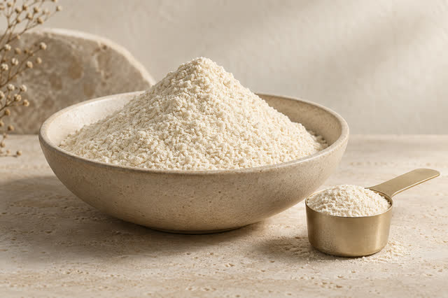
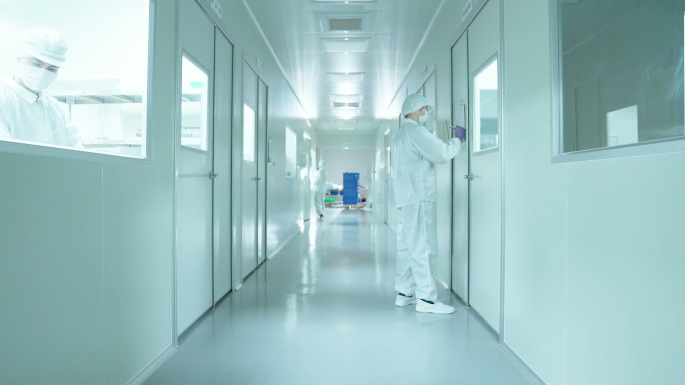

BAIDAYI / YOUR MANUFACTURING PARTNER
保健食品研發製造，
為品牌打造下一個產品。
百達醫提供 ODM／OEM 客製代工與現成商品貼牌。
從原料、配方到包裝與量產，與企業夥伴一起完成產品。
SINCE 2008 保健食品研發與製造
查看生產現場與證書
BAIDAYI / YOUR MANUFACTURING PARTNER
百達醫提供 ODM／OEM 客製代工與現成商品貼牌。
從原料、配方到包裝與量產，與企業夥伴一起完成產品。
SINCE 2008 保健食品研發與製造
查看生產現場與證書